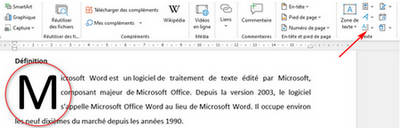
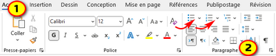
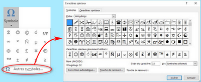
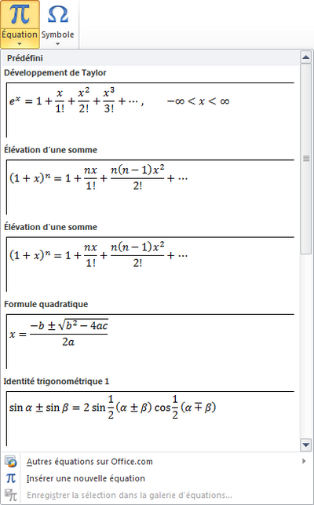

V) Insérer une lettrine, des puces et numéros, Symbole et équation
1. Insérer une lettrine
Une lettrine est une lettre de grande taille utilisée comme élément décoratif au début d’un paragraphe ou d’une section. La taille d’une lettrine est généralement au moins deux lignes.
Pour insérer une lettrine :
✔ sélectionnez le paragraphe à modifier
✔ Dans le groupe «Texte» de l’onglet «Insertion», cliquez sur «Lettrine»
✔ Choisissez l'option qui vous convient.

2. Créer une liste à puce ou une liste numérotée
✔ Sélectionnez le(s) titre(s) concerné(s)
✔ Dans le groupe «Paragraphe» de l’onglet «Accueil», cliquez sur l’outil pour insérer des puces ou cliquez sur l’outil pour numéroter les titres sélectionnés.
✔ Cliquez sur le style de puce ou le format de numéros à ajouter aux titres sélectionnés.

3. Insérer des symboles ou des équations
a. Insérer des symboles
✔ Positionnez le point d’insertion à l’endroit où doit apparaître le symbole.
✔ Dans le groupe «Symboles» de l’onglet «Insertion» cliquez sur:«Symbole»
✔ Si un des symboles proposés vous convient, cliquez dessus pour l’insérer sinon, cliquez sur l’option «Autres symboles».
✔ sélectionnez le symbole à insérer et cliquez sur le bouton «Insérer».

b. Insérer une équation
✔ Positionnez le point d’insertion à l’endroit où vous souhaitez insérer l’équation.
✔ Dans le groupe «Symboles» de l’onglet «Insertion» cliquez sur:«Équation»
✔ Cliquez sur l’équation que vous souhaitez insérer.
- Dans le ruban, l’onglet «Conception»s’affiche
✔ Si nécessaire, apportez des modifications à l’équation

Remarque :
Si aucune équation présente dans la liste ne vous convient, vous pouvez alors cliquer sur en bas de la liste.